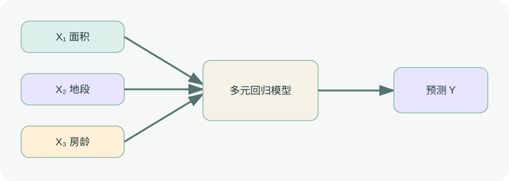

房屋价格不仅与面积有关，也可能受地段、房龄、楼层和交通影响。多元回归试图在同一个模型中描述多个变量与结果的条件关系，但“控制其他变量”不自动消除混杂。

19.1 从简单回归到多元回归：加入更多自变量
简单线性回归的公式是 y = β₀ + β₁x，而多元回归只是在右边加更多的项：
y = β₀ + β₁x₁ + β₂x₂ + ... + βₚxₚ + ε这里每个 βⱼ 都是在"控制其他变量不变"的情况下，xⱼ 变化一个单位时 y 的平均变化量。这个"控制其他变量不变"非常关键，也是多元回归相较于简单回归的核心优势：它让我们从"相关"走向更接近"因果"的推断。
19.2 回归系数的解释：控制其他变量
多元回归中的系数被称为偏回归系数（partial regression coefficient）。它回答的是这样一个问题："当其他所有变量都保持不变时，这个变量的变化能带来什么效果？"
举个例子。假设我们想预测员工的年薪（万元）：
年薪 = β₀ + β₁ × 工作年限 + β₂ × 教育年限 + β₃ × 每周加班小时 + ε如果 β₁ = 1.5，那就意味着：在教育程度和加班时间相同的情况下，多工作一年平均多赚 1.5 万元。这比简单回归中只有一个变量时的系数要"干净"得多，因为我们排除了教育水平和加班时间的混淆效应。
19.3 多重共线性：当自变量互相打架
多元回归有一个隐蔽但危险的陷阱：多重共线性（Multicollinearity）。问题出在自变量之间高度相关，使得它们"抢功"——模型无法区分到底哪个变量在贡献预测力。
判断共线性的常用指标是 VIF（Variance Inflation Factor，方差膨胀因子）。一般认为 VIF > 10 时共线性严重，需要处理。
| 自变量 | VIF | 是否严重 | 含义 |
|---|---|---|---|
| 工作年限 | 2.3 | 否 | 与其他变量相关度低 |
| 教育年限 | 1.8 | 否 | 相对独立 |
| 每周加班小时 | 1.2 | 否 | 几乎独立 |
| 上一次工资 | 14.5 | 是 | 与工作年限强相关 |
| 同事评价得分 | 9.8 | 临界 | 可能有问题 |
处理共线性的方法包括：删除其中一个高度相关的变量、使用 PCA 降维后建模、或者采用岭回归（Ridge Regression）等正则化方法。
19.4 交互项：效应不是简单相加
多元回归隐含一个假设：各变量的效果是可加的（additive）。但很多时候变量之间存在交互效应（Interaction Effect）——一个变量的效果依赖于另一个变量的取值。
比如，教育年限对收入的影响，可能在高科技行业比在传统行业更大。这就可以建模为：
收入 = β₀ + β₁ × 教育 + β₂ × 行业类型 + β₃ × (教育 × 行业类型) + ε这里的 β₃ 就是交互项系数。如果它显著为正，说明高科技行业中教育回报率确实更高。
19.5 模型选择：AIC、BIC 与逐步回归的争议
当你有很多潜在自变量时，如何选择最合适的模型？常用的指标包括：
- AIC（Akaike Information Criterion）：AIC = -2 ln(L) + 2k，其中 L 是似然值，k 是参数个数。AIC 越小越好，偏向选择预测能力强的模型。
- BIC（Bayesian Information Criterion）：BIC = -2 ln(L) + k ln(n)，惩罚比 AIC 更严厉（尤其当样本量大时），倾向于更简约的模型。
一种常见的做法是逐步回归（Stepwise Regression）：向前选择（逐个加变量）、向后剔除（逐个删变量）或双向选择。但这个方法近年来争议很大，因为它本质上是在做自动化的多重比较，容易过拟合且 p 值不可靠。
下面我们用 Python 的 statsmodels 做一个完整的多元回归演示，包括 VIF 计算：
import statsmodels.api as sm
import pandas as pd
from statsmodels.stats.outliers_influence import variance_inflation_factor
# 模拟数据
import numpy as np
np.random.seed(42)
n = 200
data = pd.DataFrame({
'面积': np.random.normal(100, 20, n),
'房龄': np.random.uniform(1, 30, n),
'楼层': np.random.randint(1, 20, n),
'卧室数': np.random.randint(1, 6, n)
})
# 构造房价：真实关系
data['房价'] = (2.5 * data['面积'] - 1.2 * data['房龄']
+ 0.3 * data['楼层'] + 5 * data['卧室数']
+ np.random.normal(0, 10, n))
X = data[['面积', '房龄', '楼层', '卧室数']]
X = sm.add_constant(X)
y = data['房价']
model = sm.OLS(y, X).fit()
print(model.summary())
# VIF 计算
vif_data = pd.DataFrame()
vif_data["变量"] = X.columns
vif_data["VIF"] = [variance_inflation_factor(X.values, i)
for i in range(X.shape[1])]
print(vif_data)运行这段代码，你会看到每个自变量的系数、p 值和置信区间，以及 VIF 值。注意这里的 卧室数 和 面积 天然有一定相关（更大的房子通常有更多卧室），但因为我们的数据构造时控制得比较好，VIF 应该不会太高。
面积 和 面积²（二次项），它们之间必然高度相关，VIF 会很高。这是共线性问题吗？不一定。多项式项之间的相关是"结构性"的，不是数据问题，通常不需要处理。VIF 工具要结合上下文理解。
好了，这一章我们认识了多元线性回归——从简单回归扩展到多个自变量，理解了偏回归系数的"控制其他变量"的含义，识别了多重共线性的陷阱，知道了如何通过交互项来建模更复杂的关系，以及用 AIC/BIC 来做模型选择。下一章，我们将进入分类问题的世界：当因变量不是连续数值，而是"是/否"这样的二分类变量时，逻辑回归（Logistic Regression）就是我们的利器。
CORE RELATION
本章核心关系
线性指对参数线性；变量与结果之间可以通过变换或交互项表达更复杂的关系。
控制其他变量后，系数如何进入预测？
固定截距 5、面积系数 2、房龄系数 −0.5，在示例输入下调整地段系数。
教学模拟：用于理解概念与方向，不替代真实数据分析、正式功效计算或研究设计审查。
TAKEAWAYS
本章要记住的三件事
- βⱼ 表示其他纳入模型的变量固定时，Xⱼ 与条件均值的线性关联。
- 多重共线性会使系数估计不稳定，但不一定降低预测准确率。
- 交互项表达一个变量的关联随另一个变量水平变化。
FURTHER READING
延伸阅读与核对来源
参考来源用于核对概念与方法。涉及具体数据、历史细节或行业案例时，应回到原始研究或官方文档逐项核验。